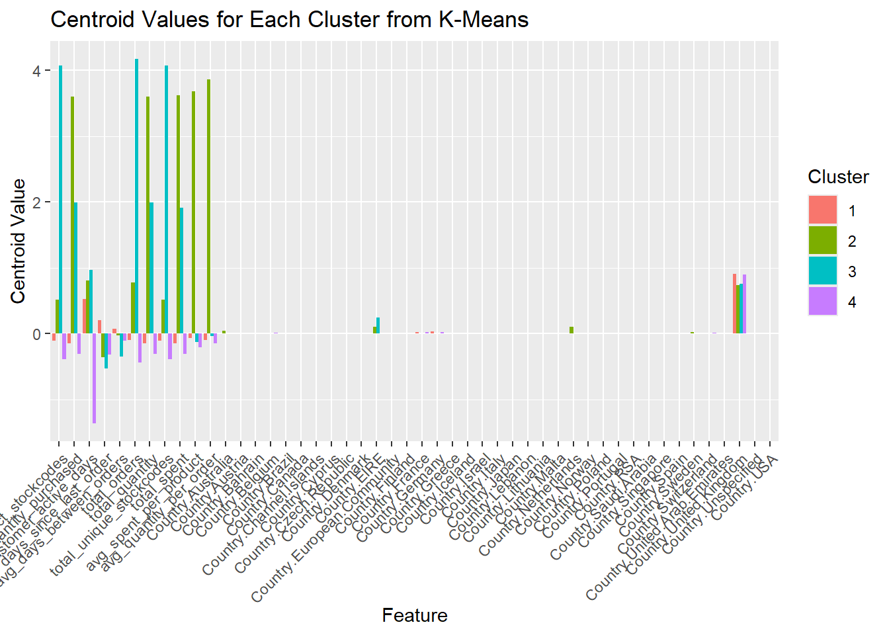
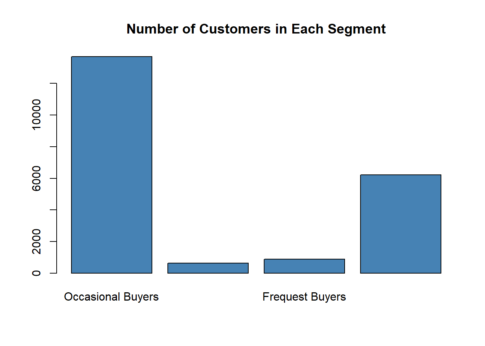
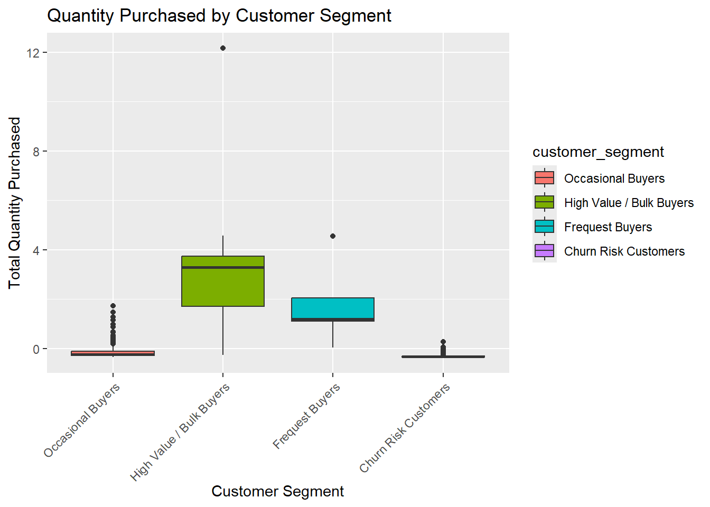
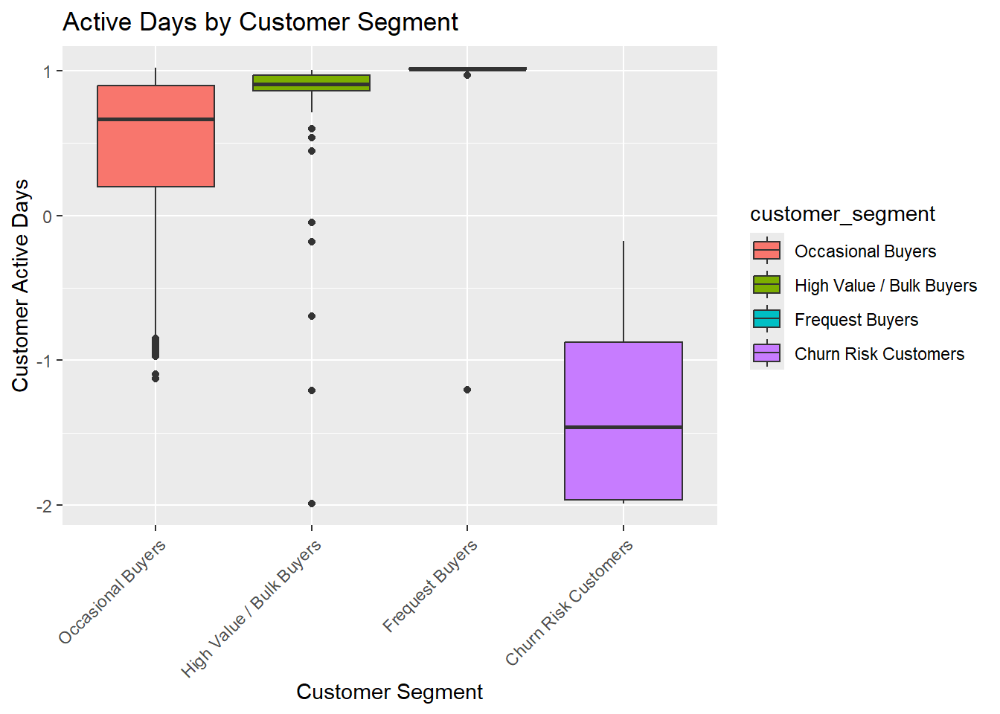

Customer segmentation through unsupervised learning K-means
Using K-Means clustering to segment customers based on purchasing behavior, enabling data-driven marketing and retention strategies.
Author
Affiliation
Mette Jonassen-Aygün
Erhvervsakademi Dania
Updated
March 13, 2025
1 Introductio
Welcome to my portfolio, where I showcase my expertise in data analysis, machine learning, and customer segmentation.
This project focuses on customer behavior analysis using the Online Retail dataset, following the CRISP-DM framework to transform raw transaction data into actionable business insights.
Through data wrangling, exploratory data analysis (EDA), feature engineering, and K-means clustering, I segment customers into distinct behavioral groups. This enables businesses to optimize marketing strategies, improve customer retention, and maximize revenue.
1.0.1Key Highlights of My Work:
Data Cleaning & Preprocessing: Handling missing values, feature engineering, and standardizing data.
Customer Segmentation: Applying K-means clustering to identify key customer segments.
Business Strategy Recommendations: Developing actionable insights based on clustering results.
Visualization & Interpretation: Using ggplot2 and radar charts to present findings in an intuitive way.
The findings from this project provide real-world applications in e-commerce and retail, helping businesses create targeted marketing strategies, loyalty programs, and personalized promotions.
Feel free to explore my work and connect if you’re interested in data-driven solutions for business growth! 🚀
2 Crisp-DM
CRISP-DM (Cross-Industry Standard Process for Data Mining) is a widely used framework for structuring data science projects. It consists of six iterative phases that ensure a systematic and business-driven approach to data analysis:
Business Understanding – Define objectives, key questions, and success criteria.
Data Understanding – Explore, visualize, and assess data quality.
Data Preparation – Clean, transform, and preprocess data for modeling.
Modeling – Apply machine learning or statistical techniques to extract insights.
Evaluation – Validate model performance and ensure alignment with business goals.
Deployment – Implement the model into production and monitor its impact.
By following CRISP-DM, data scientists can streamline workflows, reduce errors, and enhance project success rates while maintaining a strong focus on business objectives. 🚀
2.1 Business Understanding
2.2The Value of Customer Segmentation
In today’s competitive market, understanding customer behavior is crucial for businesses aiming to improve engagement, increase sales, and optimize marketing efforts. Customer segmentation is a powerful data-driven strategy that allows businesses to group customers based on their purchasing patterns, preferences, and behaviors. By leveraging machine learning techniques such as K-Means clustering, businesses can move beyond generic marketing and develop targeted strategies that resonate with different customer groups.
2.2.1Why Segment Customers Based on Data?
1️⃣ Personalized Marketing & Customer Engagement
Generic marketing campaigns often fail to resonate with all customers. By segmenting customers based on their behavior, businesses can tailor offers, promotions, and recommendations to specific groups, increasing engagement and conversions.
2️⃣ Optimized Pricing & Product Offerings
Different customer segments have varying purchasing power and buying habits. Segmentation helps businesses identify high-value customers, bulk buyers, and occasional shoppers, allowing for dynamic pricing strategies and better product positioning.
Understanding which customers are at risk of churning enables businesses to implement proactive retention strategies. For example, customers with declining purchase frequency can be re-engaged through personalized offers and loyalty programs.
4️⃣ Efficient Resource Allocation
Businesses have limited marketing budgets and resources. A data-driven segmentation approach helps optimize marketing spend by ensuring that resources are allocated to the most profitable customer groups while minimizing efforts on less engaged segments.
5️⃣ Enhanced Business Decision-Making
Customer segmentation provides actionable insights that drive strategic decisions, from inventory management to new product launches. Understanding what different customer groups value allows businesses to make informed, data-backed decisions rather than relying on assumptions.
2.3The Role of Machine Learning in Segmentation
Traditional segmentation methods, such as demographic-based grouping, often oversimplify customer behavior. With machine learning techniques like K-Means clustering, businesses can analyze vast amounts of transaction data to uncover hidden patterns and create more precise segments based on actual purchasing behavior.
This segmentation approach enables businesses to:
✔ Identify distinct customer profiles based on purchase frequency, total spend, product preferences, and activity levels.
✔ Detect at-risk customers and implement strategies to prevent churn.
✔ Recognize and nurture high-value customers to maximize profitability.
By applying data-driven customer segmentation, businesses can create highly effective, targeted marketing campaigns, enhance customer experience, and increase overall revenue growth.
2.4 Data Understanding
The Data Understanding phase in CRISP-DM focuses on exploring and assessing the dataset to ensure its quality and relevance for analysis. This includes data collection, exploratory data analysis (EDA), data visualization, and identifying missing values or inconsistencies. By gaining insights into the structure, distributions, and potential biases in the data, this step helps guide effective data preparation and modeling.
2.4.1 Installing and Loading packages
First we will install and load the packagges need for the project.
# A tibble: 6 × 8
InvoiceNo StockCode Description Quantity InvoiceDate UnitPrice
<chr> <chr> <chr> <dbl> <dttm> <dbl>
1 536365 85123A WHITE HANGING HEAR… 6 2010-12-01 08:26:00 2.55
2 536365 71053 WHITE METAL LANTERN 6 2010-12-01 08:26:00 3.39
3 536365 84406B CREAM CUPID HEARTS… 8 2010-12-01 08:26:00 2.75
4 536365 84029G KNITTED UNION FLAG… 6 2010-12-01 08:26:00 3.39
5 536365 84029E RED WOOLLY HOTTIE … 6 2010-12-01 08:26:00 3.39
6 536365 22752 SET 7 BABUSHKA NES… 2 2010-12-01 08:26:00 7.65
# ℹ 2 more variables: CustomerID <dbl>, Country <chr>
2.4.3 EDA
Exploratory analysis is the process of examining and visualizing a dataset to uncover patterns, spot anomalies, and test hypotheses. It involves generating summary statistics, creating visualizations like histograms, box plots, and scatter plots, and identifying relationships between variables. This initial step helps in understanding the structure and distribution of the data, revealing trends and outliers, and informing subsequent data preparation and modeling efforts.
We aim to assess the extent of missing values and examine the dataset’s dimensions and data types.
Code
summary(retaildata)
InvoiceNo StockCode Description Quantity
Length:541909 Length:541909 Length:541909 Min. :-80995.00
Class :character Class :character Class :character 1st Qu.: 1.00
Mode :character Mode :character Mode :character Median : 3.00
Mean : 9.55
3rd Qu.: 10.00
Max. : 80995.00
InvoiceDate UnitPrice CustomerID
Min. :2010-12-01 08:26:00.00 Min. :-11062.06 Min. :12346
1st Qu.:2011-03-28 11:34:00.00 1st Qu.: 1.25 1st Qu.:13953
Median :2011-07-19 17:17:00.00 Median : 2.08 Median :15152
Mean :2011-07-04 13:34:57.16 Mean : 4.61 Mean :15288
3rd Qu.:2011-10-19 11:27:00.00 3rd Qu.: 4.13 3rd Qu.:16791
Max. :2011-12-09 12:50:00.00 Max. : 38970.00 Max. :18287
NA's :135080
Country
Length:541909
Class :character
Mode :character
The Data Preparation phase in CRISP-DM involves transforming raw data into a clean and structured format suitable for modeling. This includes handling missing values, removing duplicates, feature engineering, encoding categorical variables, scaling numerical data, and selecting relevant features. A well-prepared dataset enhances model accuracy and ensures meaningful insights, making this step crucial for the success of any data-driven project. 🚀
Removing NA values and transforming values in the column Country into factors
Based on the availalbe variables additional features are added.
The code enhances the dataset by creating several new customer-level features. For each customer (grouped by CustomerID), it computes:
Total Distinct Stock Codes: the number of unique products purchased. Total Quantity Purchased: the sum of all item quantities bought. Customer Active Days: the time span in days from the customer’s first order to their last order. Average Days Between Orders: the mean number of days separating consecutive orders, with missing values replaced by zero. Total Orders: the count of unique invoices. Total Quantity: a re-calculation of the overall number of items purchased. Total Spent: the total monetary amount spent, computed as the sum of Quantity multiplied by UnitPrice. Average Spent Per Product: derived by dividing total spent by the number of distinct products. Average Quantity Per Order: calculated as the total quantity purchased divided by the number of orders.
Code
retaildata <- retaildata %>%group_by(CustomerID) %>%mutate(total_distinct_stockcodes =n_distinct(StockCode)) %>%ungroup()retaildata <- retaildata %>%group_by(CustomerID) %>%mutate(total_quantity_purchased =sum(Quantity, na.rm =TRUE)) %>%ungroup()#avg days betwwen ordersretaildata <- retaildata %>%group_by(CustomerID) %>%mutate(first_order_date =min(InvoiceDate, na.rm =TRUE),last_order_date =max(InvoiceDate, na.rm =TRUE),customer_active_days =as.numeric(difftime(last_order_date, first_order_date, units ="days")) ) %>%ungroup()retaildata <- retaildata %>%group_by(CustomerID) %>%arrange(InvoiceDate) %>%mutate(days_since_last_order =as.numeric(difftime(InvoiceDate, lag(InvoiceDate), units ="days")),avg_days_between_orders =mean(days_since_last_order, na.rm =TRUE),days_since_last_order =ifelse(is.na(days_since_last_order), 0, days_since_last_order) # Replace NA with 0 ) %>%ungroup()# No of ordersretaildata <- retaildata %>%group_by(CustomerID) %>%# Group data by CustomerIDmutate(total_orders =n_distinct(InvoiceNo) # Count unique InvoiceNo per customer ) %>%ungroup() # Remove grouping to maintain normal dataframe structureretaildata <- retaildata %>%group_by(CustomerID) %>%# Group data by CustomerIDmutate(total_quantity =sum(Quantity, na.rm =TRUE) # Sum all Quantity values per customer ) %>%ungroup() # Remove grouping to restore normal dataframe structureretaildata <- retaildata %>%group_by(CustomerID) %>%# Group by Customermutate(total_unique_stockcodes =n_distinct(StockCode) # Count unique StockCodes per customer ) %>%ungroup()retaildata <- retaildata %>%group_by(CustomerID) %>%# Group by CustomerIDmutate(total_spent =sum(Quantity * UnitPrice, na.rm =TRUE) # Sum total amount spent per customer ) %>%ungroup() # Remove grouping to restore normal dataframe structureretaildata <- retaildata %>%group_by(CustomerID) %>%# Group by CustomerIDmutate(total_spent =sum(Quantity * UnitPrice, na.rm =TRUE), # Total amount spent per customertotal_unique_stockcodes =n_distinct(StockCode), # Count of unique products purchasedavg_spent_per_product = total_spent / total_unique_stockcodes # Average spend per product ) %>%ungroup() # Remove grouping to restore normal dataframe structureretaildata <- retaildata %>%mutate(avg_days_between_orders =ifelse(is.na(avg_days_between_orders), 0, avg_days_between_orders))retaildata <- retaildata %>%group_by(CustomerID) %>%# Group by CustomerIDmutate(total_quantity =sum(Quantity, na.rm =TRUE), # Total quantity purchased per customertotal_orders =n_distinct(InvoiceNo), # Count unique orders per customeravg_quantity_per_order = total_quantity / total_orders # Compute average quantity per order ) %>%ungroup() # Remove grouping to restore normal dataframe structure
2.5.2 Adding dummy variables
This code snippet uses the caret package to create dummy (one-hot encoded) variables for the “Country” column in your dataset. It works as follows:
dummyVars(“~ Country”, data = retaildata):
Creates a dummy variable model for the “Country” column, which specifies how to convert the categorical variable into a set of binary (dummy) columns.
predict(dummy_model, newdata = retaildata):
Applies the dummy variable model to your data to generate the dummy variables. The result is then converted into a data frame.
cbind(retaildata, country_dummies):
Combines the original dataset with the new dummy variables side by side, so you end up with the original columns plus a set of binary columns corresponding to each unique value in “Country”.
In summary, this code transforms the “Country” column into several dummy columns and then appends these columns back to your original dataset, enabling you to use the encoded country data in further analyses.
Code
dummy_model <-dummyVars("~ Country", data = retaildata)country_dummies <-data.frame(predict(dummy_model, newdata = retaildata))# Combine dummy columns back into the data setretaildata <-cbind(retaildata, country_dummies)
retaildata_scaled <- retaildata_scaled %>%mutate_if(is.integer, as.numeric) # Convert all integer columns to numericretaildata_scaled <- retaildata_scaled %>%distinct() # Removes completely identical rows (duplicates across all columns)# Gem CustomerID i en separat vektor, inden du fjerner dencustomerIDs <- retaildata_scaled$CustomerIDretaildata_scaled <- retaildata_scaled %>% dplyr::select(-CustomerID)# Identify columns that have more than two unique valuescols_to_scale <- retaildata_scaled %>%select_if(is.numeric) %>%# Select only numeric columnssummarise_all(n_distinct) %>%# Count distinct values per columngather(variable, unique_values) %>%# Convert to long formatfilter(unique_values >2) %>%# Keep only columns with more than 2 unique valuespull(variable) # Extract column names# Standardize only the selected columnsretaildata_scaled <- retaildata_scaled %>%mutate_at(vars(cols_to_scale), scale) # Apply scale() only to selected columns
The Modeling phase in CRISP-DM focuses on applying statistical or machine learning algorithms to extract patterns and insights from the prepared data. This involves selecting appropriate models, tuning hyperparameters, training the models, and evaluating their performance using relevant metrics (e.g., accuracy, RMSE, precision-recall). Different models may be tested and compared to identify the best-performing approach. A well-structured modeling process ensures robust and reliable predictions that align with business objectives.
This code first converts all integer columns to numeric and removes any duplicate rows from the dataset. It then saves the “CustomerID” column in a separate vector and removes it temporarily so that it is not affected by the scaling process. Next, the code identifies all numeric columns that have more than two unique values (i.e., actual features) and excludes “CustomerID” from this list. Finally, it applies standardization (scaling) to these selected columns. Optionally, the “CustomerID” column can be re-added to the dataset afterward. Useing the “elbow” method, we defines the optimal cnumber of clusters to 7.
Code
# Use the Elbow Method to choose the optimal number of clustersset.seed(123) # Ensures reproducible resultswss <-numeric(20) # Vector to store total within-cluster sum of squares (WSS) for k=1..20for (k in1:20) { model <-kmeans(retaildata_scaled, centers = k, nstart =10, iter.max =20) wss[k] <- model$tot.withinss}# 5. Plot the results and look for the “elbow”plot(1:20, wss, type ="b",xlab ="Number of Clusters (k)",ylab ="Total Within-Cluster Sum of Squares (WSS)",main ="Elbow Method for Retail Data")
This code performs K-means clustering on the scaled dataset and then visualizes the cluster centroids. First, it sets a reproducible seed and defines the number of clusters (4). The K-means model is then trained using the scaled data, and the resulting cluster centers are extracted and converted into a data frame. Each cluster is labeled with an identifier, and the data is reshaped into long format using the melt() function for easy plotting. A bar plot is generated to visualize the centroid values across features for each cluster, helping to compare and understand the differences between clusters. Finally, the cluster assignments are added back to the original scaled dataset, and the code prints out the number of observations in each cluster.
Code
library(fmsb) # Load for radar chartslibrary(dplyr) # Load for data manipulationlibrary(tidyr) # Load for data reshapingset.seed(123) # Ensures reproducibilityk_optimal <-4# Set the optimal number of clusters to 4# Train the K-means model with the chosen number of clusterskmeans_model <-kmeans(retaildata_scaled, centers = k_optimal, nstart =25)# Convert the cluster centers to a dataframe for visualizationcenters_df <-as.data.frame(kmeans_model$centers)# Add a column to label each clustercenters_df$Cluster <-as.factor(1:nrow(centers_df))# Transform to 'long' format for ggplot2 visualizationcenters_long <-melt(centers_df, id.vars ="Cluster")# Create a bar plot to visualize cluster centroidsggplot(centers_long, aes(x = variable, y = value, fill = Cluster)) +geom_bar(stat ="identity", position ="dodge") +# Bar plot for centroid valuestheme(axis.text.x =element_text(angle =45, hjust =1)) +# Rotate x-axis labelslabs(x ="Feature", y ="Centroid Value", fill ="Cluster") +# Axis labels and legendggtitle("Centroid Values for Each Cluster from K-Means") # Plot title

Code
# Assign cluster labels to the original datasetretaildata_scaled$clusterKmeans <-as.factor(kmeans_model$cluster)# Print the number of observations in each clustertable(retaildata_scaled$clusterKmeans)
1 2 3 4
13698 623 877 6224
2.7 Evaluation
The Evaluation phase in CRISP-DM ensures that the developed model meets business objectives and delivers meaningful insights. This involves assessing model performance using key metrics (e.g., accuracy, precision, recall, RMSE), checking for overfitting or bias, and validating whether the model’s predictions are actionable. If the results are unsatisfactory, adjustments may be needed in data preparation or modeling before deployment. The goal is to ensure the model is reliable, interpretable, and aligned with business needs before implementation.
This code block performs several key tasks in evaluating and integrating the clustering results:
Centroid Extraction and Visualization:
The code converts the K-means cluster centroids into a data frame and adds a “Cluster” identifier. It then prints these centroids (with three decimal places) to facilitate inspection of the cluster characteristics.
Radar Chart Generation:
A function, plot_top_features_radar, is defined to extract the top N (in this case, 6) most influential features (based on absolute values) from a given cluster’s centroid. This function normalizes the data by including the overall minimum and maximum values across all clusters, and then it generates a radar chart to visually compare the dominant features of each cluster.
Cluster Summary:
The code computes the average values of all numeric features for each cluster by grouping on clusterKmeans and then prints a summary of these means for all clusters.
Integration of Cluster Assignments:
Finally, it ensures that the CustomerID column is correctly preserved and of the proper type, and then it performs a left join to add the cluster assignment (clusterKmeans) from the scaled dataset back into the original dataset. This allows for the segmentation results to be linked with the original customer data for further analysis.
Cluster 1: Moderate Buyers with Occasional Activity
Slightly below average in distinct stock codes (-0.107) and total quantity (-0.151).
Moderate customer activity (0.522), meaning they engage periodically.
Total spent (-0.147) and avg spent per product (-0.0648) are slightly below average.
Days since last order (0.198) and avg days between orders (0.0715) indicate occasional purchasing.
Likely a mix of Average Customers and Occasional Buyers.
💡 Possible Label:“Average Customers” or “Occasional Buyers”
📢 Strategy: Offer promotions to encourage frequent purchases.
Cluster 2: High-Value and Bulk Buyers
Significantly higher spending (3.618) and total quantity purchased (3.597).
Much higher number of distinct stock codes (0.515) and total orders (0.772).
High avg spent per product (3.6784) → they spend a lot on each item.
Lower avg days between orders (-0.0276), meaning they buy regularly.
They are highly engaged (customer active days: 0.804).
💡 Possible Label:“High-Value Buyers” or “Bulk Buyers”
📢 Strategy: Offer VIP programs, bulk discounts, and loyalty perks.
Cluster 3: Very High Engagement but Smaller Purchases
Extremely high distinct stock codes (4.071), total quantity (1.993), and customer active days (0.965).
Frequent buyers but smaller average spent per product (-0.1280).
Lower avg days between orders (-0.3484), meaning very frequent purchases.
High total orders (4.172), meaning they buy often but in lower quantities.
Likely represents small business resellers or highly engaged individual buyers.
💡 Possible Label:“Frequent Buyers” or “Small Business Customers”
📢 Strategy: Introduce subscription models, loyalty programs, or automatic reorders.
Cluster 4: Churn Risk / Inactive Customers
All values are negative, indicating below-average purchasing behavior.
Very low total distinct stock codes (-0.390) and total quantity (-0.308).
Low customer active days (-1.364) suggests they may not have returned in a long time.
Higher days since last order (-0.325) means they haven’t purchased recently.
Total spent (-0.308) and avg spent per product (-0.2075) are very low.
Represents customers who are at risk of churning or have already churned.
💡 Possible Label:“Churn Risk Customers” or “Inactive Customers”
📢 Strategy:Re-engagement campaigns, special discounts, or personalized emails to bring them back.
Code
# Convert K-Means centroids to a readable dataframecentroid_values <-as.data.frame(kmeans_model$centers)# Add a cluster identifier columncentroid_values$Cluster <-1:nrow(centroid_values)# Print the table with all cluster centroid valuesprint(centroid_values, digits =3) # Show 3 decimal places for readability
library(fmsb) # Load for radar chartslibrary(dplyr) # Load for data manipulationlibrary(tidyr) # Load for data reshaping# Function to plot only the most defining features for a clusterplot_top_features_radar <-function(cluster_num, top_n =5) {# Extract the centroid values for the selected cluster cluster_data <-as.data.frame(kmeans_model$centers)[cluster_num, , drop =FALSE]# Find the top N most influential features (highest absolute values) top_features <- cluster_data %>%gather(key ="Feature", value ="CentroidValue") %>%arrange(desc(abs(CentroidValue))) %>%slice(1:top_n) %>%# Select only the top N featurespull(Feature) # Extract feature names# Subset the centroid data to keep only the selected features cluster_data <- cluster_data[, top_features, drop =FALSE]# Find min/max values for the selected features for scaling max_vals <-apply(as.data.frame(kmeans_model$centers)[, top_features, drop =FALSE], 2, max) min_vals <-apply(as.data.frame(kmeans_model$centers)[, top_features, drop =FALSE], 2, min)# Add min/max rows for normalization cluster_data <-rbind(max_vals, min_vals, cluster_data)# Define colors for visualization cluster_color <-"blue" fill_color <-adjustcolor(cluster_color, alpha.f =0.3) # Lightened color# Generate the radar chartradarchart(cluster_data,axistype =2, # Show axis labelspcol = cluster_color, # Border color for the clusterpfcol = fill_color, # Fill colorplwd =2, # Line widthcglcol ="gray", cglty =1, cglwd =0.8, # Grid settingsaxislabcol ="black", # Axis label colorvlcex =0.8) # Size of variable labels# Add a titletitle(paste("Top", top_n, "Features for Cluster", cluster_num), cex.main =1.5)}plot_top_features_radar(1, top_n =6) # View Cluster 1
The Deployment phase in CRISP-DM focuses on integrating the final model into a real-world application or business process. This can involve automating predictions, embedding the model into a system, or generating reports for decision-making. Monitoring and maintenance are crucial to ensure the model remains accurate and adapts to new data over time. The ultimate goal is to turn insights into actionable strategies that drive business value.
This code is part of the deployment stage. It converts the cluster labels (stored in the “clusterKmeans” column) into descriptive customer segments for both the scaled dataset (retaildata_scaled) and the joined dataset (retaildata_with_segments). It then creates a table of the number of customers in each segment, which is visualized using a bar plot. Finally, it generates two box plots: one showing the distribution of “total_quantity_purchased” and the other displaying “customer_active_days” for each customer segment. These visualizations provide an overview of both the size and key behavioral characteristics of each customer group.
Feel free to ask if you need further modifications or explanations!
Code
retaildata_scaled$customer_segment <-factor(retaildata_scaled$clusterKmeans,levels =1:4,labels =c("Occasional Buyers", "High Value / Bulk Buyers","Frequest Buyers","Churn Risk Customers" ))retaildata_with_segments$customer_segment <-factor(retaildata_with_segments$clusterKmeans,levels =1:4,labels =c("Occasional Buyers", "High Value / Bulk Buyers","Frequest Buyers","Churn Risk Customers" ))cluster_sizes <-table(retaildata_scaled$customer_segment)library(ggplot2)barplot(cluster_sizes, main ="Number of Customers in Each Segment", col ="steelblue")

Code
ggplot(retaildata_scaled, aes(x = customer_segment, y = total_quantity_purchased, fill = customer_segment)) +geom_boxplot() +labs(title ="Quantity Purchased by Customer Segment",x ="Customer Segment", y ="Total Quantity Purchased") +theme(axis.text.x =element_text(angle =45, hjust =1))

Code
ggplot(retaildata_scaled, aes(x = customer_segment, y = customer_active_days, fill = customer_segment)) +geom_boxplot() +labs(title ="Active Days by Customer Segment",x ="Customer Segment", y ="Customer Active Days") +theme(axis.text.x =element_text(angle =45, hjust =1))

2.8.1Segment Insights & Actionable Strategies
1️⃣ Occasional Buyers
Key Insights: Buy infrequently but remain engaged.
Actionable Strategies: Send personalized recommendations and offer loyalty rewards to encourage more frequent purchases.
2️⃣ High-Value / Bulk Buyers
Key Insights: Spend a lot and purchase frequently OR buy large quantities less often.
Actionable Strategies: Offer exclusive VIP perks, early access to deals, and bulk discounts to maximize their spending potential.
3️⃣ Frequent Buyers
Key Insights: Purchase often but in smaller amounts.
Actionable Strategies: Introduce subscription models and frequent buyer programs to encourage continued engagement.
4️⃣ Churn Risk / Inactive Customers
Key Insights: Very low quantity & low active days, or haven’t bought in a long time.
Actionable Strategies: Run win-back campaigns, send re-engagement emails, and provide exclusive discounts to bring them back.
2.8.2How to Use These Insights
🔹 For Marketing Teams:
VIP Customers → Offer exclusive perks, loyalty programs, and early access to sales.
Bulk Buyers → Provide wholesale pricing and custom deals to maintain their high-value transactions.
Frequent Buyers → Implement subscription services and membership discounts to ensure customer retention.
Churn Risk Customers → Deploy re-engagement campaigns, special discounts, and personalized offers to regain their interest.
🔹 For Product Teams:
Identify which products attract specific segments.
Optimize pricing strategies based on spending patterns.
Improve customer retention strategies by aligning marketing with behavioral insights.
3 Recommendations
3.0.1Potential Improvements to the Model
To enhance the accuracy and effectiveness of the customer segmentation model, several refinements can be considered:
The current model may not fully capture all relevant factors affecting customer behavior. Additional features, such as purchase recency, seasonal trends, or product categories, could provide deeper insights into customer preferences.
Including customer lifetime value (CLV) and frequency of high-value purchases might help distinguish between casual shoppers and truly valuable customers.
2️⃣ Reevaluating the Impact of Country as a Variable
Preliminary analysis suggests that geographic location (Country) does not significantly differentiate customer segments. If further validation confirms this, it may be beneficial to remove this variable to reduce noise in the model.
Instead, regional spending behavior or shipping frequency might be more relevant features to explore.
3️⃣ Fine-Tuning the Clustering Approach
Revisiting the number of clusters: The current segmentation may be too granular, leading to small, less meaningful groups. Reducing the number of clusters could improve interpretability.
Alternative Clustering Methods: Exploring Hierarchical Clustering or DBSCAN might reveal different grouping patterns that K-Means does not capture effectively.
4️⃣ Feature Engineering & Normalization
Creating aggregated time-based metrics (e.g., purchase trends over different periods) could improve predictive power.
Ensuring that features are appropriately scaled while preserving meaningful variations can enhance model performance.
By iterating on these improvements, the customer segmentation model can become more robust, actionable, and aligned with real-world business applications
3.0.2Applying Apriori Can Add Value to Customer Segmentation
By applying Apriori to transaction data, you can extract meaningful rules that help businesses understand which products are frequently purchased together or how different customer segments behave. Below are some key applications:
1️⃣ Understanding Customer Purchase Behavior
For each customer segment, identify which products are frequently purchased together.
Example: If “High-Value Buyers” tend to purchase luxury home decor and seasonal gifts together, you can use this insight for bundling strategies.
If “Frequent Buyers” often buy discounted bulk items, the business can offer relevant promotions to increase basket size.
If customers in “Inactive Customers” segment previously purchased a product that often leads to repeat purchases, targeted reminders or subscription models can be introduced.
3️⃣ Personalized Marketing Based on Associations
If “Churn Risk Customers” previously bought electronic gadgets but haven’t repurchased, the business can send targeted discounts on accessories or complementary products to re-engage them.
4Conclusion
This project successfully applied K-Means clustering to segment customers based on their purchasing behavior, following the CRISP-DM framework. By leveraging transactional data, we identified four distinct customer groups, each representing unique purchasing patterns and engagement levels.
Key Findings:
Occasional Buyers: Customers who buy infrequently but remain engaged. These customers benefit from personalized recommendations and loyalty rewards to encourage more frequent purchases.
High-Value / Bulk Buyers: Customers who spend a lot and purchase frequently or buy in large quantities less often. VIP programs, bulk discounts, and early access to deals can maximize their value.
Frequent Buyers: Customers who make frequent purchases in smaller quantities. Subscription models and membership discounts can help increase retention.
Churn Risk / Inactive Customers: Customers with low purchasing activity or those who haven’t bought in a long time. Win-back campaigns and re-engagement strategies are essential to bringing them back.
4.0.1Business Implications
The segmentation results provide valuable business insights that can be directly applied to improve marketing strategies, pricing decisions, and customer retention efforts:
Marketing Teams: Can develop targeted campaigns tailored to each segment’s behavior, improving engagement and conversions.
Sales & Product Teams: Can use insights to optimize pricing strategies, create customized offers, and enhance customer experiences.
Customer Retention Strategies: Understanding which customers are likely to churn allows businesses to implement proactive measures to retain them.
4.0.2Future Improvements
To enhance the model’s effectiveness, we propose:
Incorporating additional behavioral variables that may impact purchasing habits.
Reevaluating the importance of geographic location (Country), as it showed limited influence in this segmentation.
Exploring association rule mining (Apriori algorithm) to discover frequent purchase patterns within each segment, enabling cross-selling and personalized recommendations.
By integrating data-driven customer segmentation, businesses can transition from one-size-fits-all marketing to highly targeted, personalized strategies, ultimately leading to improved customer engagement, increased sales, and long-term growth.Literature
5 Litterature
Introducing ChatGPT. (u.å.). Hentet 4. januar 2024, fra https://openai.com/blog/chatgpt
Online Retail Data Set. (u.å.). Hentet 13. marts 2025, fra https://www.kaggle.com/datasets/vijayuv/onlineretail